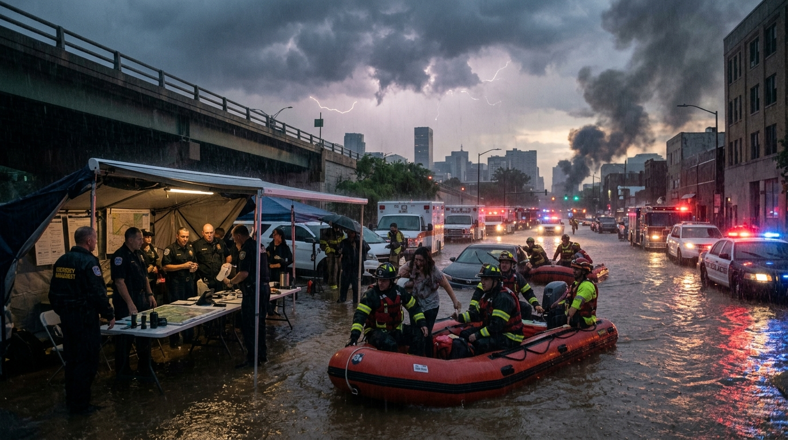
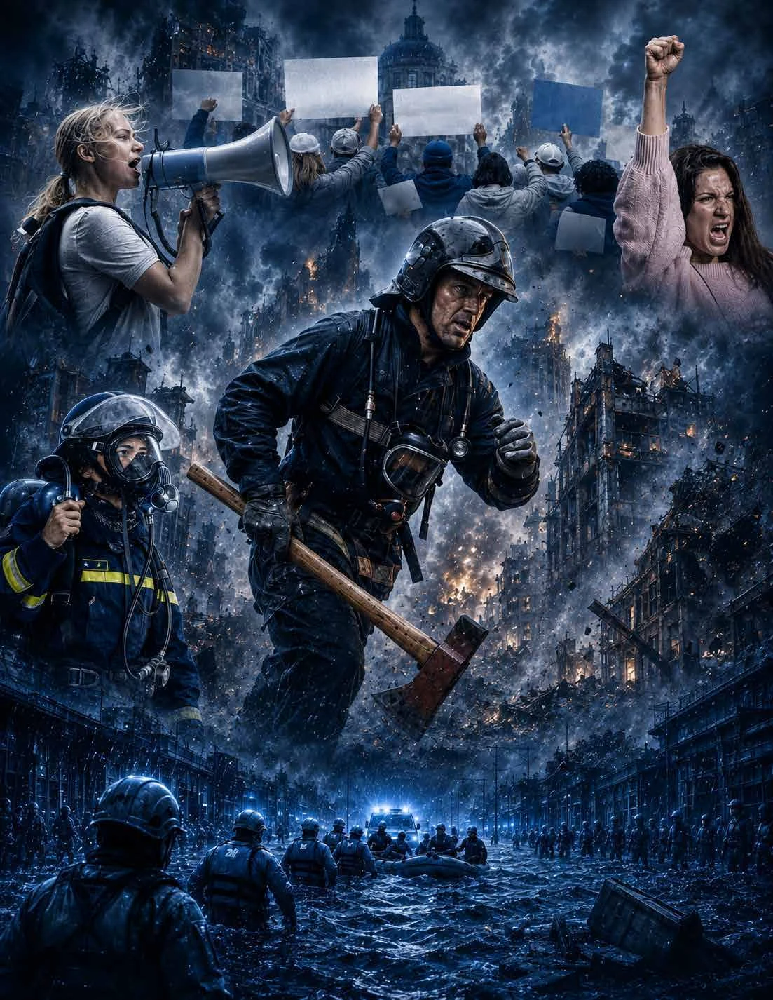
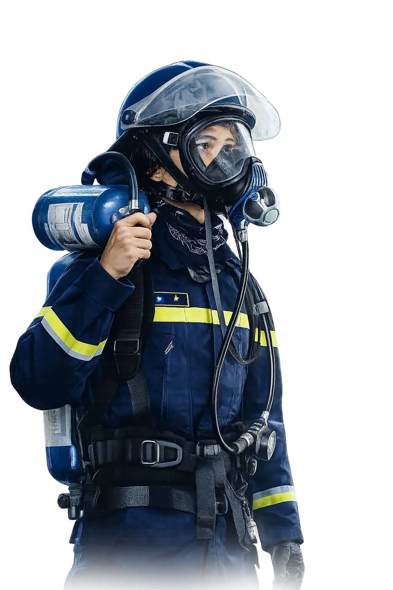
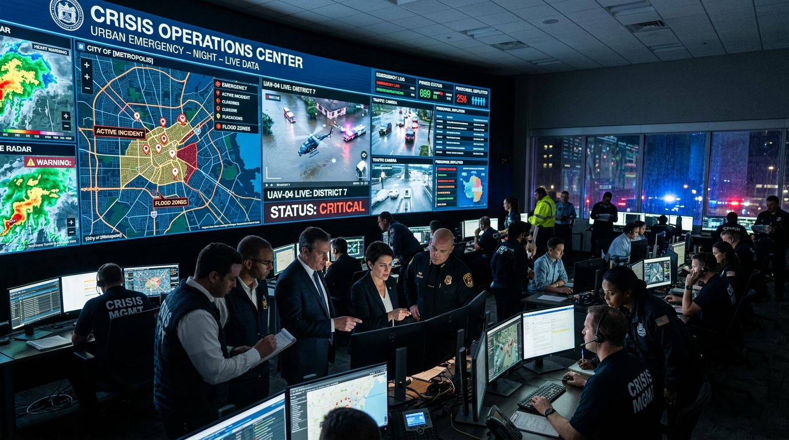
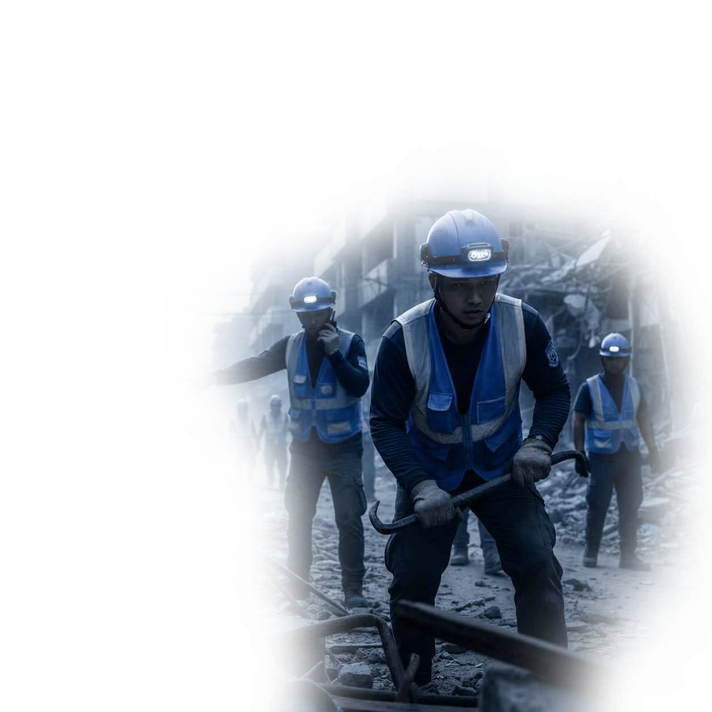
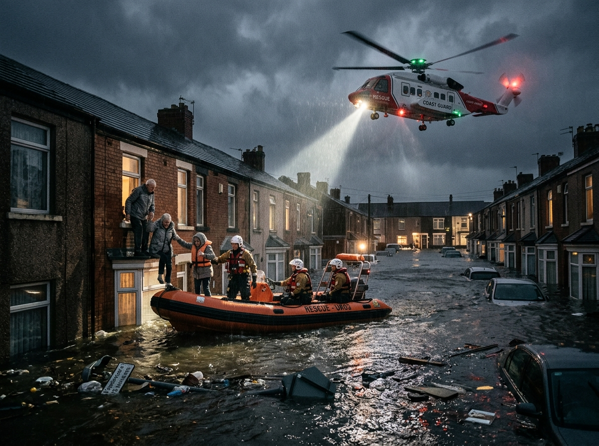
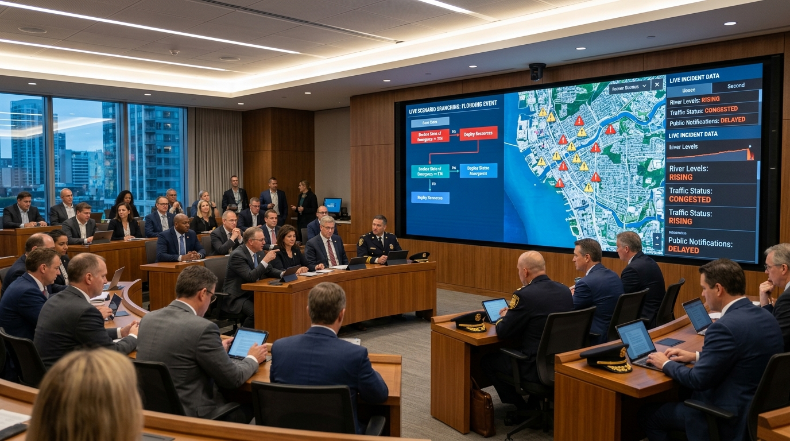
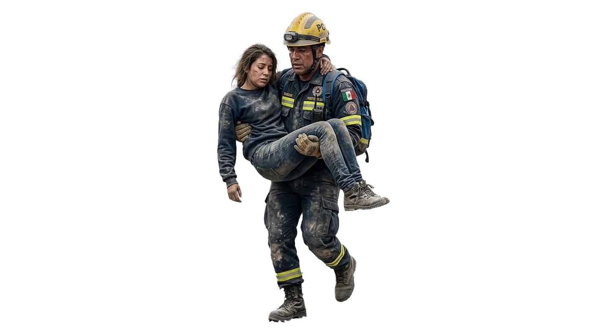

"Liderar cuando cada decisión puede salvar vidas, proteger la ciudad y garantizar la continuidad del gobierno."
Un evento imprevisto puede comprometer en pocas horas la estabilidad institucional de un gobierno local.

Capacidad de conducción firme, serena y estratégica bajo presión extrema.
Planes de continuidad institucional elaborados antes de que ocurra el desastre.
Articulación impecable entre gobierno, fuerzas de seguridad, salud y empresas.
Protocolos probados en simulacros y toma de decisiones con información en tiempo real.
Diseñado para los tomadores de decisiones que tienen bajo su responsabilidad la protección ciudadana y la continuidad gubernamental.
Líderes con la máxima responsabilidad política, institucional y legal frente a situaciones de conmoción o desastre.
Comandantes y directores operativos encargados de la respuesta táctica y la protección de vidas e infraestructura.
Organizaciones que sostienen los servicios esenciales y brindan asesoramiento técnico y humanitario.
Aprenda a tomar decisiones acertadas en los primeros minutos críticos cuando la incertidumbre es máxima y la presión es abrumadora.
Herramientas ejecutivas concretas y aplicables de inmediato a la realidad de su municipio o gobierno local.

Comprender las nuevas amenazas que enfrentan las ciudades modernas.
Aprender a liderar durante situaciones de alta presión e incertidumbre.
Diseñar municipios resilientes antes de que ocurra la emergencia.
Incorporar metodologías y protocolos internacionales de gestión de crisis.
Fortalecer la coordinación entre todas las instituciones del Estado.
Elaborar planes de continuidad institucional para el gobierno municipal.
Mejorar la comunicación pública y vocería institucional en catástrofes.
Evitar errores críticos que agravan las crisis y destruyen la confianza.
Conocer y analizar experiencias exitosas de diferentes países del mundo.
Aprender a administrar crisis políticas derivadas de catástrofes.
Integrar la gestión prospectiva del riesgo en la planificación municipal.
Preparar protocolos de respuesta rápida para las primeras horas críticas.
Proteger la infraestructura crítica y la continuidad de servicios públicos.
Incrementar la confianza ciudadana mediante una gestión profesional de emergencias.
Convertirse en un referente institucional en liderazgo para situaciones críticas.
12 horas de formación intensiva divididas en 4 módulos estratégicos con casos reales y simulaciones.
Fundamentos de gobernanza del riesgo, ciudades resilientes y toma de decisiones políticas.

Centros de Operaciones de Emergencia (COE), seguridad, ciberamenazas y comunicación de crisis.

Protocolos frente a eventos multirriesgo de gran escala, crisis sanitarias y cooperación global.

Transformación digital, Inteligencia Artificial, Drones, Big Data y resiliencia post-desastre.
Metodología ejecutiva probada que combina teoría de vanguardia, simulación en tiempo real y aplicación práctica inmediata.
El programa integra las metodologías más reconocidas de la educación ejecutiva mundial: el Método del Caso de Harvard, el aprendizaje colaborativo de Tiimiakatemia (Finlandia) y modelos de toma de decisiones bajo alta presión.

Capacite a todo su gabinete municipal, equipo de defensa civil o directivos con una sola conexión institucional.
Garantía de calidad con grabaciones y backup disponibles si tiene imprevistos o problemas de conexión.
Puede enviar hasta 5 preguntas específicas sobre su municipio 72h antes para que el orador las responda en vivo.
72 horas antes del evento nuestro equipo técnico le llamará para entrenar y asegurar su acceso a la plataforma.
Obsequio exclusivo con el directorio de contactos de autoridades y homólogos participantes para potenciar su red.
Certificado oficial emitido por UADEN (Universidad Americana de Negocios de EE. UU.) y respaldo internacional.
Referente internacional en gestión de crisis, resiliencia institucional y liderazgo bajo presión.
Director del Programa Ejecutivo Internacional • UADEN Global
UADEN Global es la red internacional de escuelas de negocios que representa y difunde los programas, metodologías y estándares académicos de la Universidad Americana de Negocios de los Estados Unidos (formación continua dependiente de la Cámara de las Empresas Latinas en los Estados Unidos).
Con filiales y aliados estratégicos en múltiples países de América Latina, EE. UU. y Europa, UADEN reúne a más de 350 expertos internacionales, consultores de empresas Fortune 500 y especialistas en gobernanza para impartir programas de alto impacto.
Al completar el seminario, los líderes y participantes estarán plenamente capacitados para:
Decisiones preparadas para proteger vidas, servicios esenciales y continuidad de gobierno.
Más de 40 programas internacionales para fortalecer liderazgo, gobierno, seguridad, tecnología y capacidad institucional.
UADEN Global y UADEN Prime integran diplomados ejecutivos, certificaciones de alto impacto y entrenamientos In-Company bajo estándares académicos de Estados Unidos.
Modernización del Estado, presupuesto por resultados, formulación de políticas y alta dirección municipal.
Prevención comunitaria del delito, inteligencia táctica policial y articulación de fuerzas del orden.
Planes de contingencia, continuidad gubernamental, adaptación al cambio climático y resiliencia urbana.
Inteligencia Artificial aplicada a la administración pública, ciudades inteligentes y protección de datos críticos.
Gobierno • Seguridad • Tecnología • Liderazgo
Aproveche la tarifa promocional de inscripción anticipada o solicite descuentos especiales por grupos y municipios.
Capacite a su equipo antes de que la presión, la incertidumbre y el tiempo limitado condicionen cada decisión.
Acceso completo a las 12 horas en vivo + Diploma oficial
Las organizaciones, municipios e instituciones obtienen descuentos por cantidad de participantes:
Información operativa para participantes y organismos inscritos.
El seminario se dictará el Lunes 28 y Martes 29 de Septiembre en dos bloques diarios de 3 horas cada uno (Total: 12 horas ejecutivas):
• Bloque de la Mañana: 8:00 AM a 11:00 AM (Hora de Chicago UTC-5)
• Receso: 11:00 AM a 14:00 PM (2 Horas de descanso)
• Bloque de la Tarde: 14:00 PM a 17:00 PM (Hora de Chicago UTC-5)
A través de una sola conexión o inscripción institucional, su municipio o empresa puede proyectar la transmisión en su sala de crisis, auditorio o sala de juntas para capacitar a todo su equipo de trabajo, directores y personal operativo simultáneamente sin costo adicional.
• Conexión a Internet de banda ancha en cualquier computadora, laptop o dispositivo móvil (Apple o Android).
• Sin restricciones para transmisión de video en vivo.
• Bocina/parlantes y micrófono habilitados para interactuar.
• 72 horas antes del evento le llamaremos de forma personalizada para entrenar y asegurar su acceso a la plataforma.
Cada participante recibirá un Certificado de Participación emitido por UADEN (Universidad Americana de Negocios de EE. UU.). Una vez efectuado el pago, recibirá inmediatamente el Invoice oficial emitido desde Estados Unidos, carta de bienvenida y credenciales de acceso.
UADEN Global ofrece Garantía de Acceso Asincrónico y Backup en caso de problemas de conexión o emergencias de último momento, permitiéndole revisar las grabaciones completas del programa y acceder a los apuntes y materiales descargables.
Usted y su equipo pueden enviar hasta 5 preguntas específicas sobre situaciones críticas que enfrente su municipio hasta 72 horas antes del inicio del curso. El claustro docente las incorporará y responderá directamente durante el seminario.
Nuestro equipo de asesores internacionales le brindará atención personalizada para resolver sus dudas, tramitar facturas proforma institucionales para municipios y formalizar su inscripción.

Complete los datos para recibir el Invoice y los accesos de su delegación.
Complete sus datos para asegurar su cupo con descuento y recibir la documentación oficial.
Obtenga el PDF oficial de 2da Edición (3.7 MB)